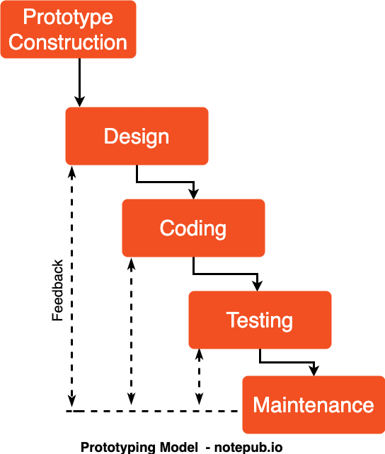

Prototüüpimine
Prototüüpimine on protess kus tehakse süsteemi algne versioon kus testitakse
süsteemi algseid funktsioone ja ka samas saam demonstreerida ideid.
Prototüüp ei pea sisaldama kõike, kõik funktsionaalsus ei pea töötama
- Etapp - Nõuete kogumine
Nõuded saavad olla üldised ja ka fikseeritud. Neid nõudeid oleks vaja tulevikus
täpsustama hakata.
- Etapp - Kiire kavandamine
See on see etapp kus tehaks kiirelt üks prototüüp valmis, et seda kliendile näidata.
Klient saab seda prototüüpi hinnata ja ka tagasi sidet anda kui on vaja midagi lisada.
või muuta.
- Etapp - Prototüübi parandamine
Prototüüpi parandatakse nii kaua kuni klient on rahul sellega ja sellega saab arendaja
õppida kliendi soovide pealt.

Head ja halvad küljed
| Head |
Halvad |
| Kerge on leida vigu ja soove. |
Klient võib tahta liiga palju |
| Prototüüpe saab taaskasutada |
|